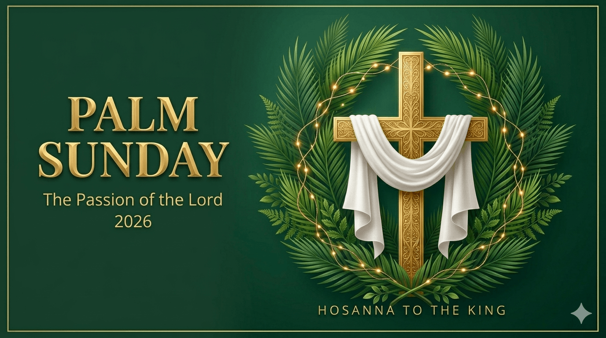

Verse 1
O’er all the way, green palms and flowers gay
Are strewn this day in festal preparation,
Where Jesus comes to wipe our tears away,
E’en now the throng to welcome Him prepare.
Chorus:
Join all and sing, His name declare,
Let ev’ry voice resound with acclamation.
Hosanna! Praise to the Lord!
Bless Him who comes to bring us salvation!
Verse 2
His word goes forth, and people by its might
Once more their freedom gain from degradation;
Humanity doth give to each his right,
While those in darkness find the heavenly light.
Verse 3
Sing and rejoice, O blest Jerusalem,
Of all thy sons behold the emancipation;
Through boundless love, the Christ of Bethlehem
Brings hope and faith to thee forevermore.
When Jesus and the disciples drew near Jerusalem and came to Bethphage on the Mount of Olives, Jesus sent two disciples, saying to them, "Go into the village opposite you, and immediately you will find an ass tethered, and a colt with her. Untie them and bring them here to me. And if anyone should say anything to you, reply, ‘The master has need of them.’ Then he will send them at once."
This happened so that what had been spoken through the prophet might be fulfilled: Behold, your king comes to you, meek and riding on an ass, and on a colt, the foal of a beast of burden.
The disciples went and did as Jesus had ordered them. They brought the ass and the colt and laid their cloaks over them, and he sat upon them. The very large crowd spread their cloaks on the road, while others cut branches from the trees and strewed them on the road. The crowds preceding him and those following kept crying out and saying: "Hosanna to the Son of David; blessed is he who comes in the name of the Lord; hosanna in the highest."
And when he entered Jerusalem the whole city was shaken and asked, "Who is this?" And the crowds replied, "This is Jesus the prophet, from Nazareth in Galilee."
The Gospel of the Lord.
R. Praise to you Lord Jesus Christ.
Chorus:
Hosanna, hosanna,
Hosanna in the highest.
Hosanna, hosanna,
Hosanna in the highest.
Verse:
Lord we lift up Your name,
With hearts full of praise,
Be exalted, O Lord, my God,
Hosanna in the highest.
Bridge:
Glory, glory,
Glory to the King of Kings.
Glory, glory,
Glory to the King of Kings.
Isaiah 50:4-7
The Lord GOD has given me the tongue of those who are taught, that I may know how to sustain with a word him who is weary. Morning by morning he awakens; he awakens my ear to hear as those who are taught.
The Lord God has opened my ear, and I was not rebellious; I turned not backwards. I gave my back to those who strike, and my cheeks to those who pull out the beard; I hid not my face from disgrace and spitting.
But the Lord God helps me; therefore I have not been disgraced; therefore I have set my face like a flint, and I know that I shall not be put to shame.
The word of the Lord.
R. Thanks be to God.
R. My God, my God, why have you abandoned me?
All who see me scoff at me; they mock me with parted lips, they wag their heads: "He relied on the LORD; let him deliver him, let him rescue him, if he loves him."
R. My God, my God, why have you abandoned me?
Indeed, many dogs surround me, a pack of evildoers closes in upon me; They have pierced my hands and my feet; I can count all my bones.
R. My God, my God, why have you abandoned me?
They divide my garments among them, and for my vesture they cast lots. But you, O LORD, be not far from me; O my help, hasten to aid me.
R. My God, my God, why have you abandoned me?
Brethren:
Christ Jesus, who, though he was in the form of God, did not count equality with God a thing to be grasped, but emptied himself, by taking the form of a servant, being born in the likeness of men.
And being found in human form, he humbled himself by becoming obedient to the point of death, even death on a cross]. Therefore God has highly exalted him and bestowed on him the name that is above every name, so that at the name of Jesus every knee should bow, in heaven and on earth and under the earth, and every tongue confess that Jesus Christ is Lord, to the glory of God the Father.
The word of the Lord.
R. Thanks be to God.
N. At that time: Jesus stood before the governor, and the governor asked him,
C. "Are you the King of the Jews?"
N. Jesus said,
✝ "You have said so."
N. But when he was accused by the chief priests and elders, he gave no answer. Then Pilate said to him,
C. "Do you not hear how many things they testify against you?"
N. But he gave him no answer, not even to a single charge, so that the governor was greatly amazed. Now at the feast the governor was accustomed to release for the crowd any one prisoner whom they wanted. And they had then a notorious prisoner called Barabbas. So when they had gathered, Pilate said to them,
C. "Whom do you want me to release for you: Barabbas, or Jesus who is called Christ?"
N. For he knew that it was out of envy that they had delivered him up. Besides, while he was sitting on the judgment seat, his wife sent word to him, "Have nothing to do with that righteous man, for I have suffered much because of him today in a dream." Now the chief priests and the elders persuaded the crowd to ask for Barabbas and destroy Jesus. The governor again said to them,
C. "Which of the two do you want me to release for you?"
N. And they said,
C. "Barabbas."
N. Pilate said to them, "Then what shall I do with Jesus who is called Christ?" They all said,
C. "Let him be crucified!"
N. And he said, "Why? What evil has he done?" But they shouted all the more,
C. "Let him be crucified!"
N. So when Pilate saw that he was gaining nothing, but rather that a riot was beginning, he took water and washed his hands before the crowd, saying,
C. "I am innocent of this man's blood; see to it yourselves."
N. And all the people answered,
C. "His blood be on us and on our children!"
N. Then he released for them Barabbas, and having scourged Jesus, delivered him to be crucified. Then the soldiers of the governor took Jesus into the governor's headquarters... And kneeling before him, they mocked him, saying,
C. "Hail, King of the Jews!"
N. And they spat on him and took the reed and struck him on the head. And when they had mocked him, they stripped him of the robe and put his own clothes on him and led him away to crucify him... Over his head they put the charge against him, which read, "This is Jesus, the King of the Jews." Then two robbers were crucified with him, one on the right and one on the left. And those who passed by derided him, wagging their heads and saying,
C. "You who would destroy the temple and rebuild it in three days, save yourself! If you are the Son of God, come down from the cross."
N. So also the chief priests, with the scribes and elders, mocked him, saying,
C. "He saved others; he cannot save himself. He is the King of Israel; let him come down now from the cross, and we will believe in him. He trusts in God; let God deliver him now, if he desires him. For he said, 'I am the Son of God.'"
N. And the robbers who were crucified with him also reviled him in the same way. Now from the sixth hour there was darkness over all the land until the ninth hour. And about the ninth hour Jesus cried out with a loud voice, saying,
✝ "Eli, Eli, lema sabachthani?"
N. that is,
✝ "My God, my God, why have you forsaken me?"
N. And some of the bystanders, hearing it, said,
C. "This man is calling Elijah."
N. And one of them at once ran and took a sponge, filled it with sour wine, and put it on a reed and gave it to him to drink. But the others said,
C. "Wait, let us see whether Elijah will come to save him."
N. And Jesus cried out again with a loud voice and yielded up his spirit.
(Kneel and pause for a while)N. And behold, the curtain of the temple was torn in two, from top to bottom. And the earth shook, and the rocks were split. The tombs also were opened. And many bodies of the saints who had fallen asleep were raised... When the centurion and those who were with him... saw the earthquake and what took place, they were filled with awe and said,
C. "Truly this was the Son of God!"
The Gospel of the Lord.
R. Praise to you Lord Jesus Christ.